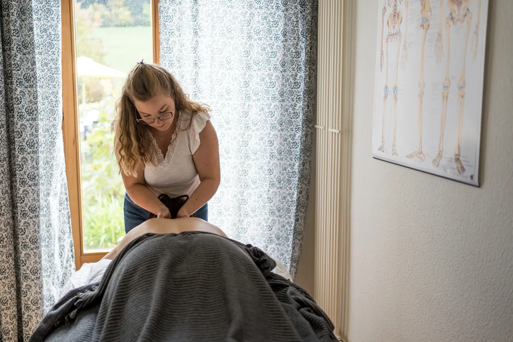
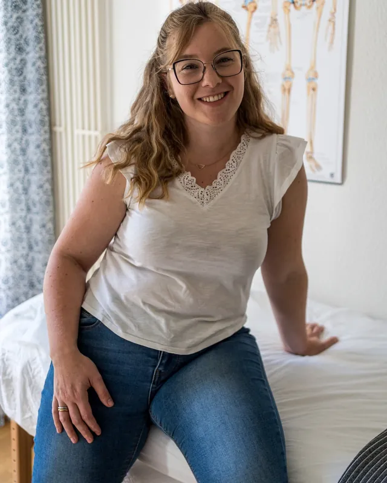
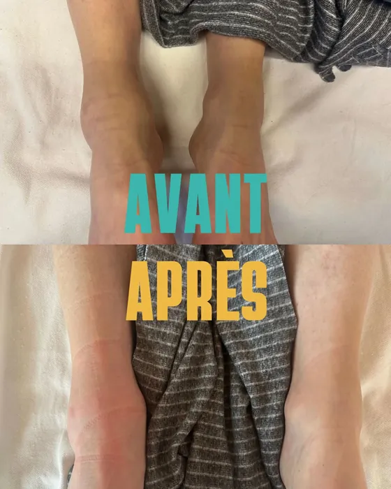
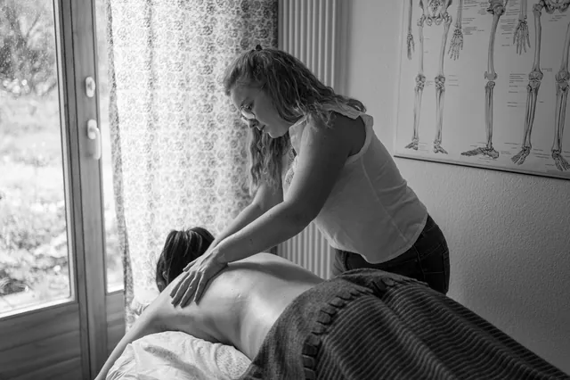
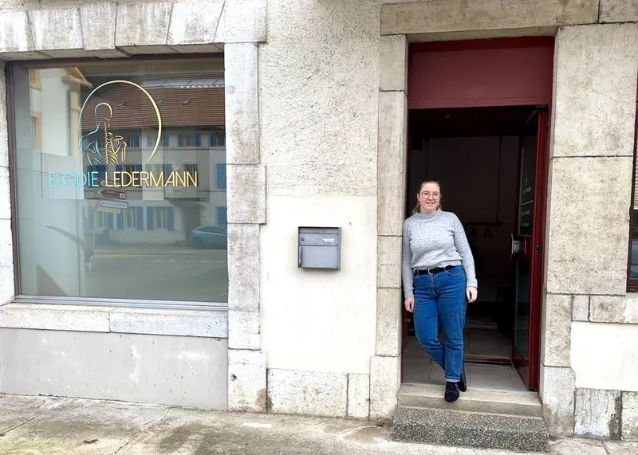
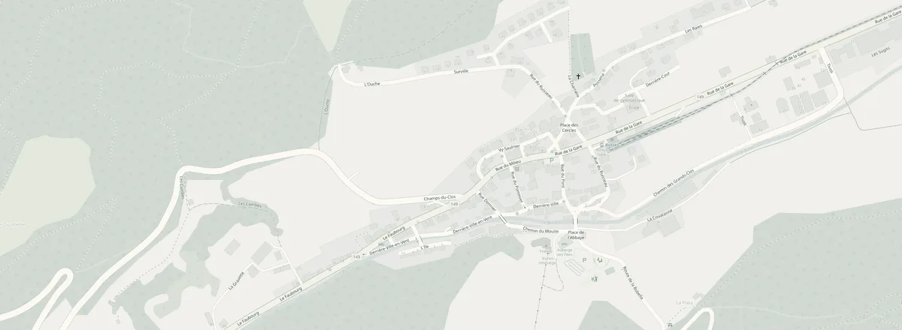

01Certifiée 2025
Drainage lymphatique manuel
Méthode Vodder & Földi
Rétention d'eau, jambes lourdes, œdèmes, préparation et récupération autour d'une opération, changements hormonaux. Un soin doux qui soulage et allège.
CHF 100.–Réserver
Cabinet à Buttes · Val-de-Travers
Drainage lymphatique manuel, massage médical, classique, pré et post-natal. Un soin adapté à vos besoins, pris en charge par la plupart des assurances complémentaires.
4,9 sur Google · 18 avis

Elodie masseuse depuis 2016Par où commencer ?
Choisissez ce qui vous parle. Je vous dis quel soin vous convient, puis on affine ensemble lors de la première consultation.
Des gestes lents, doux et rythmés qui relancent la circulation de la lymphe. Pour les jambes qui gonflent, qui pèsent en fin de journée, ou après une longue période debout.
« Consultée notamment pour des drainages lymphatiques (jambes), j'ai rapidement pu constater des effets sur la durée. » Elodie M., avis Google
Soins & tarifs
Le massage apporte une détente physique et psychique. Il permet aussi de traiter les tensions et les douleurs. Chaque séance commence par un échange : on part de vous, pas d'un protocole.
Méthode Vodder & Földi
Rétention d'eau, jambes lourdes, œdèmes, préparation et récupération autour d'une opération, changements hormonaux. Un soin doux qui soulage et allège.
Thérapeutique · sportif
Tensions musculaires, douleurs de dos et de nuque, préparation et récupération sportive, suivi de blessures. Ciblé, efficace, toujours à l'écoute.
Détente profonde
Un vrai moment pour vous. Le corps se relâche, la tête se pose. Pour le stress, la fatigue, ou simplement parce que vous le méritez.
Grossesse · post-partum
Pendant la grossesse et après l'accouchement : soulager le dos, alléger les jambes, et prendre soin d'un corps qui a tout donné.
Remboursé par votre complémentaire ? Elodie est agréée RME (Registre de Médecine Empirique). La plupart des assurances complémentaires prennent en charge une partie des séances. Je vous recommande de demander confirmation directement à votre assurance.
Paiement : TWINT ou espèces

Cas réel · au cabinet
Une patiente est venue me consulter pour une cheville gonflée depuis environ un mois. Le constat était clair : 1,5 cm de différence entre la cheville droite et la gauche.
Après une heure de drainage lymphatique manuel, la cheville droite avait dégonflé d'un centimètre. Le drainage est un allié puissant pour réduire les œdèmes et retrouver du confort.
Chaque corps réagit différemment : les résultats varient d'une personne à l'autre.
Réserver un drainage
Ma devise :
simple et efficace.
Qui suis-je
Fascinée par la machine qu'est le corps humain, j'ai choisi ce métier pour aider chacun·e à retrouver l'équilibre de son corps.
Masseuse classique depuis 2016, j'ai très vite enchaîné avec le diplôme de médecine académique : plus de 300 heures d'anatomie, de physiologie, de pathologie et de psychologie. Après une riche expérience en institut, je me suis sentie appelée à plus. J'entendais les plaintes et les douleurs, sans avoir les outils pour les traiter. Je me suis donc tournée tout naturellement vers le massage médical.
Aujourd'hui je vous reçois dans mon cabinet de Buttes, au cœur du Val-de-Travers. Maman de jumeaux, grande lectrice et toujours partante pour l'aventure, je sais ce que c'est qu'un corps fatigué. Je le traite avec sérieux, et beaucoup de douceur.
Avis Google
Sur Instagram
Prendre rendez-vous
Le cabinet

| Lundi | 08:30 – 20:30 |
|---|---|
| Mardi | 08:30 – 11:30 |
| Mercredi | 08:30 – 11:30 |
| Jeudi | 08:30 – 15:00 |
| Vendredi | 08:30 – 15:00 |
| Samedi | Fermé |
| Dimanche | Fermé |

Rue du Pont 2Ouvrir dans Google Maps © les contributeurs OpenStreetMapQuestions fréquentes
Une autre question ? Écrivez-moi sur WhatsApp ou appelez le 079 935 60 05.
Je suis agréée RME, un label reconnu par la plupart des assurances complémentaires. Le remboursement dépend de votre contrat : je vous recommande de demander confirmation directement à votre assurance avant la séance.
On commence par un échange : vos douleurs, votre quotidien, vos objectifs. J'adapte ensuite le soin à ce que votre corps demande ce jour-là. Je vous donne aussi des pistes à appliquer chez vous, entre les séances.
Le massage et le drainage lymphatique sont à CHF 100.– la séance. Paiement par TWINT ou en espèces.
Pour les jambes lourdes et la rétention d'eau, les changements hormonaux, la grossesse et le post-partum, la préparation et la récupération autour d'une opération (toujours en accord avec votre médecin), ou simplement pour apaiser le système nerveux.
En ligne, 24 h/24, en choisissant « Première consultation », « Consultation de suivi » ou « Drainage lymphatique ». Vous pouvez aussi m'écrire sur WhatsApp ou m'appeler au 079 935 60 05.
Oui, un parking est à disposition au cabinet, Rue du Pont 2 à Buttes.